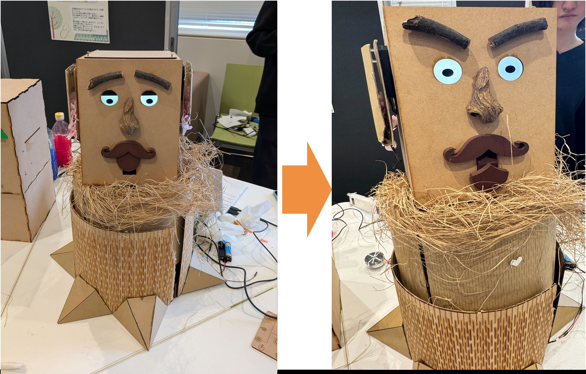

Lab Project / HCI / Entertainment Computing
パズルデバイス・プロジェクト
パズルデバイス・プロジェクト
「不思議な木のお医者さん」
明治大学 橋本研究室 | 木村光騎、時永愛莉、渡邉修太朗
01
作品コンセプト
「育てる・助ける体験」
プレイヤーは「木のお医者さん」となり、言葉を喋れず苦しんでいる不思議な木の様子を観察し、治療を進めていく。
薬を用意して飲ませたり、異物を取り除いたり…治療が進むにつれて木が元気を取り戻し、最終的には成長して花を咲かせるまでの物語を体験する。

02
体験の流れ

1. 元気がない状態
鼻をすすり、喋れない状態。原因を観察する。

2. くしゃみ
「こより」を鼻に入れると、口から悪いものが飛び出し、木が喋れるようになる。

3. 栄養剤生成
口からでたヒントの紙をもとに、栄養剤を調合する。

4. 栄養注入
生成機で正しい栄養剤を作り、注射器で木に注入する。

5. 成長
注入した栄養剤により、木が物理的に伸びる。

6. 開花
タイムマシーン等のギミックを経て、最後には蕾が開花する。
03
担当箇所


口の開閉
ラック・アンド・ピニオンを使用。モーターの回転運動を直線運動に変換し、口の開閉を実現している。

表情の変化
ゲームの進行度に合わせて眉毛や目が動くように制御。現在の状態を直感的に伝える。

くしゃみギミック
鼻にこよりが入ったことを圧力センサで検知。口が開くことで中にあるものを排出する。